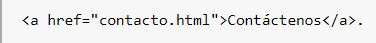
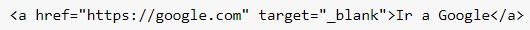

Las listas en HTML nos permite crear conjuntos de elementos en forma de lista dentro de una página, todos los cuales irán precedidos, generalmente, por un guión o número.
Los tipos de listas en HTML son los siguientes:
Listas ordenadas
Listas desordenadas
Listas de definiciones
Las listas en HTML ordenadas son aquellas que nos muestran los elementos de la lista en orden. Para representar el orden tendremos los elementos numerados. Es decir, cada uno de los elementos irá precedido de un número o letra que establezca su orden.
Las listas en HTML ordenadas se representan mediante el elemento OL.
Las listas desordenadas en HTML nos sirven para mostrar los elementos sin ningún tipo de orden, simplemente precedidos por una viñeta que puede ser un punto, un cuadrado,…
Para definir una lista desordenada en HTML utilizamos el elemento ul.
Las listas en HTML de definiciones en HTML nos sirven para montar listas en las que tenemos la estructura valor y definición. Suelen ser listas para definir términos, como si fuese un diccionario, si bien pueden ser cualquier par valor-definición.
Las listas en HTML de definiciones en HTML se construyen mediante el elemento dl.
Lo más importante de los documentos HTML son los enlaces. Ya que mediante los enlaces en HTML podemos comunicar una página con otra. De esta forma, enlazando documentos HTML podemos acabar tejiendo lo que es Internet.
El enlace en HTML, tal y como lo hemos visto hasta ahora, sirve para enlazar contra un recurso de la web: servidor, directorio, dominio,… Y lo que en mayor o menor medida describe lo que enlazamos es el contenido que encontramos entre las etiquetas A.
Existen diferentes tipos de enlaces que detallo a continuación:
Son los enlaces principales de un sitio. Si en el archivo index.html, queremos agregar un vínculo a contacto.html el código sería así:

Son los enlaces entre diferentes sitios web. Si queremos vincular un sitio web con otro, tenemos que indicar la ruta absoluta del sitio escribiendo la url completa que conviene copiarla del navegador. En este caso, es común usar el atributo target="" que nos permite abrir el enlace en una pestaña nueva.
Por ejemplo, si quisiera poner un vínculo a Google y que éste abra en pestaña nueva, sería así:

Las anclas son enlaces hacia un punto determinado dentro de un html. Se usa en varios casos, por ejemplo en una página de preguntas frecuentes donde las respuestas están desarrolladas debajo de las preguntas, o en Wikipedia, cuando el texto es extenso el menú tiene vínculos con anclas. También en los textos largos, al finalizar muchas veces se coloca un botón para subir.
En los sitios de una sola página donde los botones en realidad hacen scroll, esas son anclas.